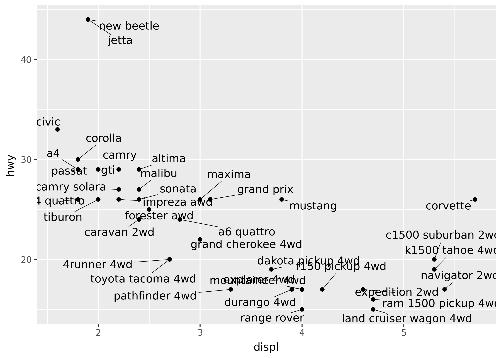

from plotnine import *
from plotnine.data import penguinsAnnotations
This page covers how to describe or emphasize data with annotations in plots. This includes labelling points, adding arrows, and highlighting areas of interest. It also describes how to tackle the common issue of overlapping text labels.
TipYou will learn
- How to quickly draw a single geom, without having to pass in data.
- How to add more complex styling to
geom_text(). - How to avoid overlapping text labels.
- How to emphasize areas of interest with boxes, arrows, and shading.
NoteKey points
- Use
annotate()to quickly add a single geom mark to a plot. - Use
geom_text(path_effects=...)to add more complex styling to text labels. - Use
geom_text(adjust_text=...)to automatically adjust the position of text labels so they don’t overlap. - More advanced styling of text labels (e.g. in the plot title), requires manually handling matplotlib objects.
- Use
geom_rect()to add background shading to plots. - Use
geom_segment()to add arrows to plots.
Setup
annotate()
Use annotate() to write some text on a plot.
r_coef = penguins["flipper_length_mm"].corr(penguins["body_mass_g"])
p = (
ggplot(penguins, aes("flipper_length_mm", "body_mass_g"))
+ geom_point()
+ geom_smooth(method="lm")
+ annotate(
"text",
x=180,
y=5750,
label=f"r = {r_coef:.2f}",
color="blue",
size=20,
)
)
pNotice that the correlation coefficient is shown on the top-left of the plot. The first argument to annotate, specifies the geom to use (in this case, the "text" means to use geom_text()).
In order to use annotate with another geom, pass the name of the geom as the first argument. For example, the code below draws a rectangle around the text.
p + annotate("rect", xmin=170, xmax=190, ymin=5500, ymax=6000, color="blue", fill=None)Note that annotate() takes the same arguments as the corresponding geom_*() class (in this case, geom_rect()).
geom_text(path_effects=...)
Use the geom_text(path_effects=...) argument to add more complex styling to your text. This argument takes a list of objects created by the matplotlib.patheffects submodule.
import matplotlib.patheffects as pe
effect = [
pe.PathPatchEffect(offset=(4, -4), hatch="xxxx", facecolor="gray"),
pe.PathPatchEffect(edgecolor="white", linewidth=1.1, facecolor="black"),
]
(
ggplot(penguins, aes(x="flipper_length_mm", y="body_mass_g"))
+ geom_point()
+ annotate("text", x=180, y=5750, label="YO", path_effects=effect, size=75)
)geom_text(adjust_text=...)
Use the geom_text(adjust_text=...) argument to adjust the position of text labels so they don’t overlap. This argument takes a dictionary that gets passed to the adjustText package’s adjust_text() function.
from plotnine.data import mpg
(
ggplot(mpg.drop_duplicates("model"), aes("displ", "hwy", label="model"))
+ geom_point()
+ geom_text(adjust_text={"arrowprops": {"arrowstyle": "-"}})
)0 [ 0.12406611 -0.35595294]
37 [0.0672267 0.33196752]
35 [ 0.27003578 -0.26664066]
36 [-0.82122958 -0.86529317]
Styling text
Currently, styling text requires manually handling matplotlib objects (which plotnine builds on top of). See the blogpost “Annotated area charts with plotnine” for a walkthrough of creating custom text.
Emphasis with shading
import math
import pandas as pd
from plotnine.data import huron
droughts = pd.DataFrame(
{
"start": [1930, 1960],
"stop": [1937, 1967],
}
)
(
ggplot(huron)
+ geom_line(aes("year", "level"))
+ geom_rect(
aes(xmin="start", xmax="stop"),
ymin=-math.inf,
ymax=math.inf,
alpha=0.2,
fill="red",
data=droughts,
)
+ labs(
title="Lake Huron Water Levels",
subtitle="(famous droughts marked in red)",
)
)Emphasis with arrows
from plotnine.data import economics
(
ggplot(economics, aes("date", "unemploy"))
+ geom_line()
+ scale_x_date(breaks="10 years")
+ annotate(
"segment",
x="2004-01-01",
y=13000,
xend="2007-01-01",
yend=7600,
color="red",
arrow=arrow(length=0.2),
)
+ annotate(
"text",
x="2004-01-01",
y=13000,
label="Great Recession",
color="red",
size=20,
ha="right",
nudge_x=-100,
)
)